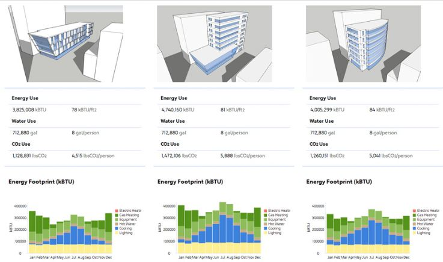

BIM Use: Energy Analysis

Energy Analysis
The BIM Use of Facility Energy Analysis is a process in the facility design phase in which one or more building energy simulation programs use a properly adjusted BIM model to conduct energy assessments for the current building design.
The core goal of this BIM use is to inspect building energy standard compatibility and seek opportunities to optimize the proposed design to reduce the structure's life-cycle costs.
[Image of BIM energy analysis workflow showing 3D model export to gbXML and energy simulation results]
- Save time and costs by obtaining building and system information automatically from the BIM model instead of inputting data manually.
- Improve building energy prediction accuracy by auto-determining building information such as geometries and volumes precisely from the BIM model.
- Help with building energy code verification (e.g., LEED, local green building standards).
- Optimize building design for better building performance efficiency and reduce building life-cycle cost.
- Analysis Tools: Energy simulation software (e.g., Insight, IESVE, Green Building Studio).
- Standards: Access to compatible building energy codes/standards.
- Data Exchange: gbXML or IFC schema support.
- Knowledge of basic building energy systems and compatible energy standards.
- Knowledge and experience of building system design (HVAC/MEP).
- Ability to manipulate, navigate, and review a 3D Model.
- Ability to assess a model through engineering analysis tools.